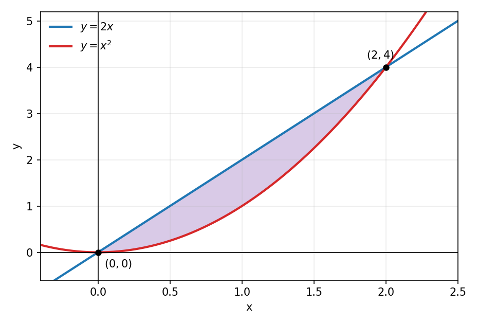
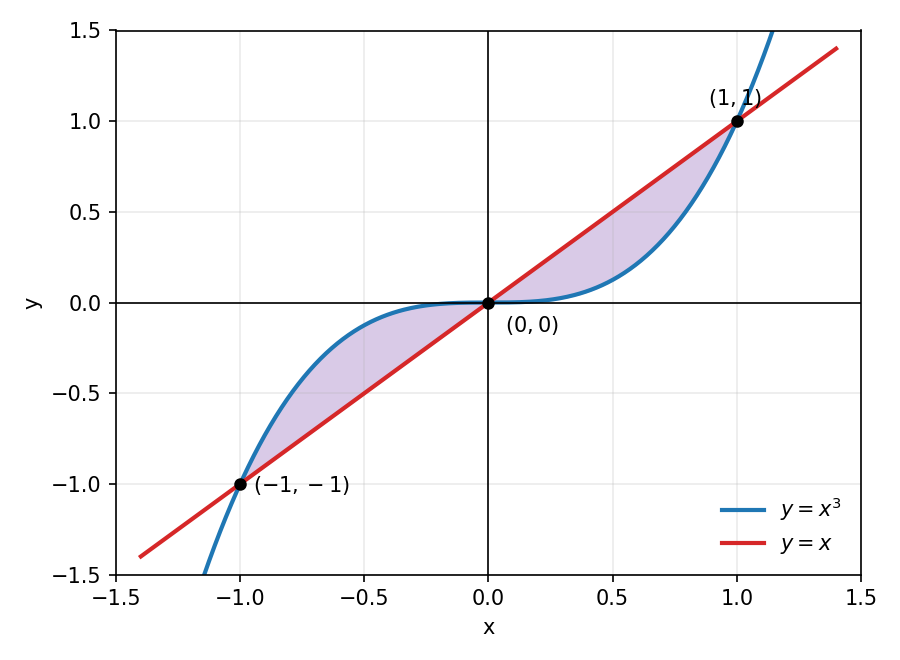
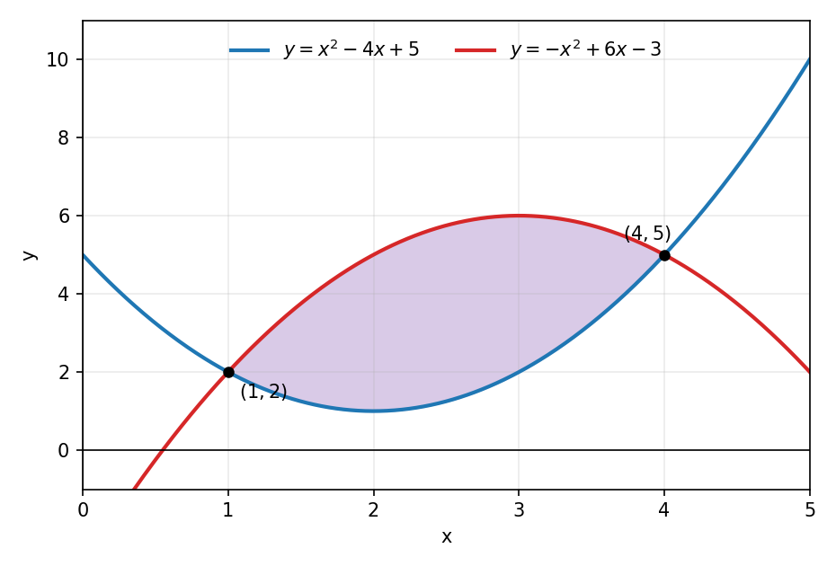
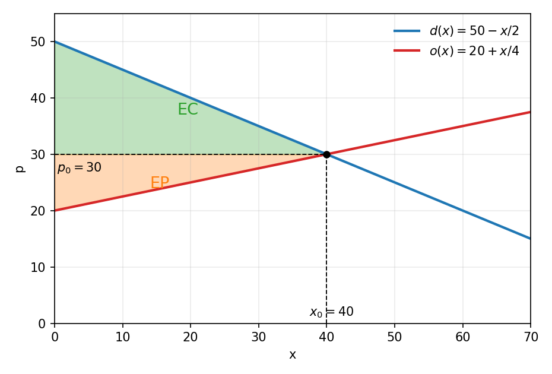

Área entre Curvas y Excedentes
La integral definida y el área
Recordemos que la integral definida se calcula con el Teorema Fundamental del Cálculo:
\[\int_a^b f(x) \, dx = F(b) - F(a)\]
donde \(F\) es una primitiva de \(f\). Si \(f(x) \geq 0\) en el intervalo \([a, b]\), la integral es exactamente el área de la región bajo la gráfica de \(f\) y sobre el eje \(x\). Si \(f\) toma valores negativos, la integral cuenta esa parte como área negativa, con signo.
Área entre dos curvas
Si \(f\) y \(g\) son continuas en \([a, b]\) y se cumple \(f(x) \geq g(x)\) para todo \(x\) en el intervalo, entonces el área de la región encerrada entre las dos curvas es:
\[A = \int_a^b \left[ f(x) - g(x) \right] dx\]
El procedimiento tiene tres pasos. Primero se encuentran los puntos de intersección igualando \(f(x) = g(x)\), que entregan los límites \(a\) y \(b\). Luego se determina cuál de las dos curvas está por encima en el intervalo. Finalmente se integra la diferencia entre la curva superior y la inferior. Si las curvas se cruzan dentro del intervalo, el área se calcula separando la integral en cada tramo.
La región entre las curvas

En la figura, la curva superior es \(y = 2x\) y la inferior es \(y = x^2\) en el intervalo \([0, 2]\). El área sombreada es la integral de la diferencia entre ambas.
Ejercicio 1
Calcular el área de la región encerrada entre las curvas:
\[y = 2x, \qquad y = x^2\]
Buscamos las intersecciones igualando las expresiones:
\[2x = x^2 \quad \Longrightarrow \quad x^2 - 2x = 0 \quad \Longrightarrow \quad x(x - 2) = 0\]
de modo que \(x = 0\) y \(x = 2\). Estos son los límites de integración.
En el intervalo \((0, 2)\) se cumple \(2x > x^2\).
\[2x - x^2 = x(2 - x) > 0\]
Por lo tanto la curva superior es \(y = 2x\) y la inferior es \(y = x^2\).
El área es la integral de la diferencia entre la curva superior y la inferior:
\[A = \int_0^2 \left( 2x - x^2 \right) dx\]
Calculamos la primitiva y evaluamos en los extremos:
\[A = \left[ x^2 - \frac{x^3}{3} \right]_0^2 = \left( 4 - \frac{8}{3} \right) - 0 = \frac{12}{3} - \frac{8}{3} = \frac{4}{3}\]
El área de la región es \(\frac{4}{3}\) unidades cuadradas.
Ejercicio 2
Calcular el área de la región encerrada entre las curvas:
\[y = x^3, \qquad y = x\]
Igualamos las expresiones para encontrar las intersecciones:
\[x^3 = x \quad \Longrightarrow \quad x^3 - x = 0 \quad \Longrightarrow \quad x(x^2 - 1) = 0\]
de modo que las curvas se cortan en \(x = -1\), \(x = 0\) y \(x = 1\).
La región tiene dos tramos: en \((-1, 0)\) la curva \(y = x^3\) está por encima, y en \((0, 1)\) la curva \(y = x\) está por encima.
La región entre las curvas

La figura muestra los dos tramos de la región: a la izquierda de \(x = 0\) la curva \(y = x^3\) queda por encima, y a la derecha la curva \(y = x\) queda por encima.
La función \(|x - x^3|\) es par, porque al cambiar \(x\) por \(-x\) se obtiene el mismo valor. Por lo tanto el área del tramo izquierdo es igual a la del tramo derecho y podemos duplicar la integral sobre \([0, 1]\), donde \(x \geq x^3\):
\[A = 2 \int_0^1 \left( x - x^3 \right) dx\]
Integramos término a término y evaluamos:
\[A = 2 \left[ \frac{x^2}{2} - \frac{x^4}{4} \right]_0^1 = 2 \left( \frac{1}{2} - \frac{1}{4} \right) = 2 \cdot \frac{1}{4} = \frac{1}{2}\]
El área encerrada entre las curvas es \(\frac{1}{2}\) unidades cuadradas.
Ejercicio 3
Considere la región \(R\) encerrada entre las parábolas:
\[y = x^2 - 4x + 5, \qquad y = -x^2 + 6x - 3\]
Determine los puntos de intersección de las parábolas.
Calcule el área de la región \(R\).
Igualamos las expresiones para encontrar las intersecciones:
\[x^2 - 4x + 5 = -x^2 + 6x - 3 \quad \Longrightarrow \quad 2x^2 - 10x + 8 = 0 \quad \Longrightarrow \quad x^2 - 5x + 4 = 0\]
Factorizamos el trinomio:
\[(x - 1)(x - 4) = 0 \quad \Longrightarrow \quad x = 1, \quad x = 4\]
Evaluando en cualquiera de las parábolas se obtienen los puntos de intersección \((1, 2)\) y \((4, 5)\). Estos son los límites de integración.
En el intervalo \((1, 4)\) debemos identificar la curva superior. Evaluamos ambas parábolas en \(x = 2\):
\[y_1(2) = 2^2 - 4(2) + 5 = 1, \qquad y_2(2) = -2^2 + 6(2) - 3 = 5\]
Como \(y_2(2) > y_1(2)\), la curva superior es \(y = -x^2 + 6x - 3\), la parábola que abre hacia abajo.
La región \(R\)

El área se calcula integrando la diferencia entre la curva superior y la inferior:
\[A = \int_1^4 \left[ \left( -x^2 + 6x - 3 \right) - \left( x^2 - 4x + 5 \right) \right] dx = \int_1^4 \left( -2x^2 + 10x - 8 \right) dx\]
Integramos y evaluamos en los extremos. En \(x = 4\) la primitiva vale \(\frac{16}{3}\) y en \(x = 1\) vale \(-\frac{11}{3}\):
\[A = \left[ -\frac{2x^3}{3} + 5x^2 - 8x \right]_1^4 = \frac{16}{3} - \left( -\frac{11}{3} \right) = \frac{27}{3} = 9\]
El área de la región \(R\) es \(9\) unidades cuadradas.
Excedente del consumidor y del productor
En un mercado, la función de demanda \(d(x)\) indica el precio que los consumidores están dispuestos a pagar por la cantidad \(x\) de unidades. La función de oferta \(o(x)\) indica el precio que los productores están dispuestos a aceptar por esa cantidad.
El mercado alcanza el equilibrio en el punto \((x_0, p_0)\), donde la cantidad ofrecida iguala a la demandada:
\[d(x_0) = o(x_0), \qquad p_0 = d(x_0)\]
El excedente del consumidor mide el ahorro total de los consumidores que pagaban más que el precio de equilibrio. Es el área entre la curva de demanda y la recta horizontal \(p = p_0\), desde \(x = 0\) hasta \(x_0\):
\[EC = \int_0^{x_0} \left[ d(x) - p_0 \right] dx\]
El excedente del productor mide la ganancia total de los productores que vendían a un precio menor que el de equilibrio. Es el área entre la recta horizontal \(p = p_0\) y la curva de oferta, desde \(x = 0\) hasta \(x_0\):
\[EP = \int_0^{x_0} \left[ p_0 - o(x) \right] dx\]
Los excedentes en el gráfico

El excedente del consumidor (verde) es el área bajo la demanda y sobre el precio de equilibrio. El excedente del productor (naranjo) es el área sobre la oferta y bajo el precio de equilibrio.
Ejercicio 4
En un mercado, la función de demanda y la función de oferta son:
\[d(x) = 50 - \frac{x}{2}, \qquad o(x) = 20 + \frac{x}{4}\]
donde \(x\) es la cantidad de unidades y los precios están en miles de pesos.
Determine la cantidad y el precio de equilibrio del mercado.
Calcule el excedente del consumidor.
Calcule el excedente del productor.
Igualamos demanda y oferta para encontrar la cantidad de equilibrio:
\[50 - \frac{x_0}{2} = 20 + \frac{x_0}{4} \quad \Longrightarrow \quad 30 = \frac{3x_0}{4} \quad \Longrightarrow \quad x_0 = 40\]
El precio de equilibrio se obtiene evaluando la demanda en \(x_0 = 40\):
\[p_0 = d(40) = 50 - \frac{40}{2} = 30\]
El punto de equilibrio es \((x_0, p_0) = (40, 30)\).
El excedente del consumidor es:
\[EC = \int_0^{40} \left[ \left( 50 - \frac{x}{2} \right) - 30 \right] dx = \int_0^{40} \left( 20 - \frac{x}{2} \right) dx\]
Integramos y evaluamos:
\[EC = \left[ 20x - \frac{x^2}{4} \right]_0^{40} = \left( 800 - 400 \right) - 0 = 400\]
Los consumidores ahorran \(400\) mil pesos.
El excedente del productor es:
\[EP = \int_0^{40} \left[ 30 - \left( 20 + \frac{x}{4} \right) \right] dx = \int_0^{40} \left( 10 - \frac{x}{4} \right) dx\]
Integramos y evaluamos:
\[EP = \left[ 10x - \frac{x^2}{8} \right]_0^{40} = \left( 400 - 200 \right) - 0 = 200\]
Los productores ganan \(200\) mil pesos.
Ejercicio 5
Las funciones de demanda y oferta de un producto son:
\[d(x) = 144 - x^2, \qquad o(x) = 48 + 4x\]
Determine la cantidad y el precio de equilibrio del mercado.
Calcule el excedente del consumidor.
Calcule el excedente del productor.
Igualamos demanda y oferta:
\[144 - x^2 = 48 + 4x \quad \Longrightarrow \quad x^2 + 4x - 96 = 0\]
Factorizamos el trinomio:
\[(x + 12)(x - 8) = 0\]
Las soluciones son \(x = -12\) y \(x = 8\). Como la cantidad no puede ser negativa, la cantidad de equilibrio es \(x_0 = 8\). El precio de equilibrio es:
\[p_0 = d(8) = 144 - 64 = 80\]
El excedente del consumidor es:
\[EC = \int_0^8 \left[ \left( 144 - x^2 \right) - 80 \right] dx = \int_0^8 \left( 64 - x^2 \right) dx\]
Integramos y evaluamos:
\[EC = \left[ 64x - \frac{x^3}{3} \right]_0^8 = 512 - \frac{512}{3} = \frac{1024}{3} \approx 341{,}33\]
El excedente del productor es:
\[EP = \int_0^8 \left[ 80 - \left( 48 + 4x \right) \right] dx = \int_0^8 \left( 32 - 4x \right) dx\]
Integramos y evaluamos:
\[EP = \left[ 32x - 2x^2 \right]_0^8 = 256 - 128 = 128\]
El excedente del consumidor es \(\frac{1024}{3}\) y el del productor es \(128\), en las mismas unidades monetarias.